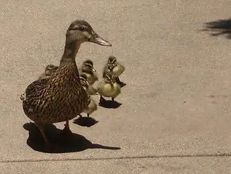

{kind=link}

http://www.flickr.com/photos/dorkmaster/28916406/This morning, as I was taking two of my little “ducklings” to a morning event, we were stopped mid-road by a mama duck guiding her babies across the street. It was the most precious sight! There were about nine little ducklings trailing behind their mama. When they reached a curb, up the mama went, quite effortlessly, and off she went, waddling ahead. The babies, however, couldn’t get up on the curb. It took the mama a while to realize her ducklings weren’t behind her. Finally, she did a U-turn. Realizing they couldn’t traverse the curb, she joined them down in the street and nudged them another couple feet ahead. Then up she went again. And they tried again. Oh, how they tried! By this time, we were cheering madly for the ducklings. “Come on, you can do it!” Finally, the first one got up, then another, and another, and another. One by one they tackled the giant curb, which seemed impossible even from where we sat in the minivan. It finally got to the smallest duckling at the rear. I thought for sure he was the runt and out of luck. What would become of the poor little ducky? (My 7-year-old offered to take it home if it didn’t make it.) Well, he had to try a few times, his little feathers fluttering like crazy, but on about the fourth try, he made it. We were hooting and hollering by this time. As the ducks all waddled and skittered across the grass (which was no doubt greener than where they’d come from), we finally moved along to our destination.
What a delightful way to start our morning, right in the middle of our city. What a daring mama. What courageous little ducklings.
What struck me about this sight was the confidence the mama duck had in her ducklings. She seemed certain they would make the curb. I wasn’t so sure. That curb looked gargantuan next to those little ducks. But they did it – they did it! And when they did, I felt like dancing. I felt the triumph of that moment for those fuzzy little critters. I felt it for my own life as well.
This week has been a good one in my writing life. I’ve received several pieces of fun, writing-related news which has set my week right. I also received a rejection from a publisher, but with an encouraging note attached. Each of these revelations has represented the gargantuan curbs that have challenged me, and the hard work I’ve done to traverse them. And I’ve been reminded in numerous ways that I’m not alone in any of this, even if I oftentimes work in isolation.
Just like the ducks, writers need one another for company and to keep each other feeling confident and worthy of our unique writing journey. A steadfast mentor is always somewhere up ahead trusting we’ll get it right, even if it takes a while. And our fellow ducklings are nearby, too. Some are a few webbed-feet ahead of us; some a few behind. We are all on an amazing, dramatic journey, both together and apart from one another.
To top off the good news this week (which I’ll share just as soon as I can), two artist friends and I have collaborated on working our way through challenges in the book, The Artist’s Way. We’re having a wonderfully productive three-way email conversation, and plotting an “Artist Date Extravaganza” at some point in the near future. Yes, just like those ducklings, our writing community is terribly important if we’re to conquer the curb, fuzzy flying feathers and all.
Q4U: What have you done this week to increase the odds of mastering the curb?